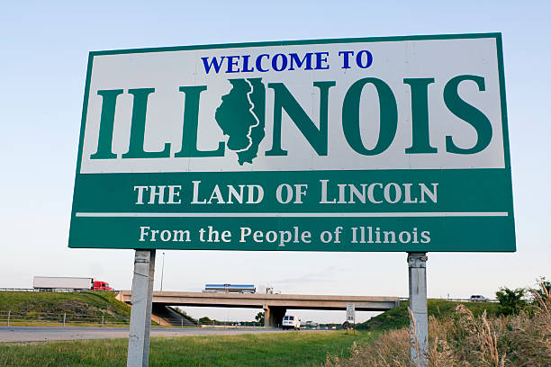

The Great State of Illinois
Illinois, with a population surpassing 12.67 million, is known for its diverse landscape from the bustling city of Chicago to the quiet rural areas in Southern Illinois. Illinois became a state on December 3, 1818, and has played a significant role in American history, notably as the home state of President Abraham Lincoln.
Explore the Land of Lincoln
| City | Sports Teams | Historical Sites |
|---|---|---|
| Springfield | Springfield Jr. Blues (Hockey) | Lincoln Home National Historic Site, Old State Capitol |
| Chicago | Chicago Bears (NFL), Chicago Cubs (MLB), Chicago White Sox (MLB), Chicago Bulls (NBA), Chicago Blackhawks (NHL) | Wrigley Field |
| Galena, IL | Galena Pirates (High School Football) | Ulysses S. Grant Home, Galena Historic District, Old Market House |
Illinois showcases a dynamic mix of urban and rural settings, offering a robust economy and a rich cultural scene. The state's economy is diverse, with Chicago acting as a major financial and cultural hub in the Midwest.